5 TRAITEMENTS
5.1 Filtrer les tâches
5.2 Trier Grouper les tâches
5.3 Onglet pour renuméroter les tâches dans l'ordre désiré
5.4 Simulation du déroulement d'un projet
5.5 Onglet de saisi et échéancier des coûts
5.6 Import / Export
5.1 Filtrer les tâches
5.1.0 Remarques filtres
5.1.1 Utiliser Filtres Mémorisé
5.1.2 Compléter Créer un Nouveau Filtre mémorisé
5.1.0 Remarques filtres
Les filtres vont permettre de sélectionner que les tâches qui ont ou plusieurs champs donnés en particulier les critères.
Le filtrage des tâches ayant une donnée ou plusieurs ne les suppriment pas de l’ensemble des tâches, mais les occultent seulement de la visualisation ou de l’impression d’un document : rapport ou planning.
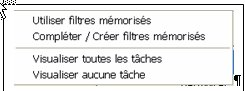
A partir du menu ""Filtrer" vous aurez accès àla boîte de dialogue ci-contre
En fonction des besoins, à partir d’un des onglets,
- Avec Visualiser toutes les tâches
vous ferrez apparaître toutes les tâches du projet pour consulter ou visualiser toutes es tâches
- Avec Visualiser aucune tâches
vous ferrez disparaître toutes les tâches du projet
- Avec le paragraphe 5.1.1 « Utiliser Filtres Mémorisés »Vous consulterez la liste des filtres mémorisés et vous en choisirez. Vous pourrez l’appliquer tel quel, mais vous aurez la possibilité de modifier son paramétrage pour prendre en compte les données du projet, Par ailleurs vous pourrez mémorisé cette option pour la réutiliser de nouveau.
- Avec le paragraphe 5.1.2« Compléter Créer un Nouveau Filtre mémorisé » vous complèterez un filtre mémorisé si besoin vous créerez un nouveau
5.1.1 Utiliser Filtres Mémorisé
Si vous avez sélectionné la commande "Utiliser Filtres Mémorisé". La boîte de dialogue correspondante apparaît sélectionnez le filtre souhaité dans la Liste.
Vous allez pouvoir dans la liste des filtres mémorisés en choisir un Sélectionnez le filtre souhaité dans la Liste par défilement
Remarque.
Dans cette liste l’utilisateur à la possibilité de les classés entre eux par ordre de préséance avec les flèches.
Dès le filtre mémorisé choisi vous aurez son titre et les commentaire correspondants, en principe son but et le détail de son utilisation.
Ce filtre peut contenir plusieurs options successives et de plus certaines peuvent être limitées entre deux valeurs.
Vous aurez deux possibilités :
- Cliquez sur le bouton "Appliquer".pour appliquer ce filtre sélectionné tel quel
- Cliquez sur le bouton "Pas à pas",
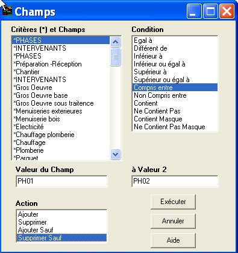
- Si vous cliquez sur le bouton "Appliquer", le filtre choisi sera appliqué dans l'onglet ou il a été demandé
- Avec "pas à pas" les différentes options du filtre vont s'afficher successivement vous pourrez modifier les conditions et les valeurs de chacune des donnée concernées, ( voire la deuxième valeur dans le cas du choix d’une plage). si voulez prendre en compte les données de votre projet.
- Par ailleurs vous pourrez modifier directement une des seules options, placez-vous sur celle-ci et cliquez sur le bouton "Modifier une option"
Vos choix faits, si nécessaire
- Cliquez sur "Mémoriser" pour sauvegarder ce nouveau paramétrage de ce filtre voire modifier, si nécessaire, le titre et le commentaire de ce filtre.
- Validez avec le bouton OK.de le paramétrage des options effectuées
5.1.2 Compléter Créer un Nouveau Filtre mémorisé
Si vous avez sélectionné la commande " Compléter Créer un Nouveau Filtre mémorisé ". La boîte de dialogue correspondante apparaît
Dans cette boite de dialogue (complémentaire à la boite " Utiliser filtres mémorisés "), vous pourrez: ajouter, modifier, supprimer, une option d'un filtre mémorisé de la liste .
Démarche pour compléter ou créer un nouveau filtre
Dans un premier temps vous devrez choisir la base du filtre soit à partir de:
- avec toutes les tâches du projet puis d'éliminer des tâches ayant un ou plusieurs champs
- avec aucune des tâches du projet puis d'ajouter des tâches ayant un ou plusieurs champs
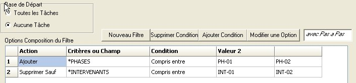
>
Dans un deuxième temps vous allez paramétrer ce nouveau filtre:
- Cliquez sur le bouton " Créer nouveau filtre.
- Cliquez sur le bouton " Ajouter condition
- Dans la boite de dialogue " Champ " qui apparaît choisissez le premier champ concerné
- Dans la liste Condition en cliquez sur la condition retenue pour ce champ avec cette action vous devrez saisir une ou deux valeurs (une plage entre ces deux valeurs)
Ce choix du champ avec l'action et les valeurs concernées va s'afficher dans le volet du bas " Options composition filtre " On va ainsi saisir différente champs successifs pour obtenir le filtre d'un besoin donné.
Pour terminer<
- Cliquez sur " Mémoriser filtre " pour mémoriser ce nouveau paramétrage dans ce filtre
-
Vous devrez saisir la désignation et le commentaire de ce filtre. Celui-ci va s'afficher en tête de la liste mémorisée.
Dés que ce filtre sera figé vous cliquerez sur la commande " OK " vous reviendrez dans la boîte de dialogue " Utiliser Filtres Mémorisé "*
5.2 Trier Grouper les tâches
5.2.0 Remarques sur "Trier Grouper Tâches "
5.2 1 Appliquer un " Trier Grouper Tâches " existant
5.2.2 Ajouter supprimer champs du traitement " Trier Grouper Tâches "
5.2.3 Regrouper les tâches des champs du traitement " Trier Grouper Tâches"
5.2.4 Modifier compléter Affiner un " Trier Grouper Tâches " existant
5.2.0 Remarques sur "Trier Grouper Tâches "
On va pouvoir trier les tâches en fonction de leur champ est ceci sur plusieurs niveaux, et regrouper celles-ci dans des bandes pour obtenir une visualisation et impression des rapports et plannings pour un besoin donné.
De plus il vous sera possible de faire apparaître les tâches enveloppes des critères et sous critères, et également avoir le choix de faire apparaître, ou non, les tâches d'exécution
En complément vous pourrez choisir les colonnes paramétrer celle-ci et caractères des tâches (voir page ).
pour les rapports et grille du Gantt.
Dans l'exemple ci-dessous on va choisir une présentation sur trois niveaux hiérarchiques possible du critères phases.
5.2 1 Appliquer un " Trier Grouper Tâches " existant
Avec le traitement " Trier Grouper Tâches " du menu " Outil " vous accédez à la boîte de dialogue correspondante
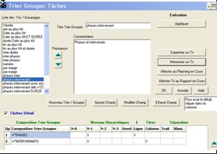
Elle permet
- de visualiser et de choisir un Trier Grouper Tâches " mémorisé et de l'appliquer.
- de modifier compléter de créer un nouveau " Trier Grouper Tâches "
Des " tris grouper tâches" sont déjà mémorisé vous pourrez les consulter, les utiliser les modifier en créer de nouveaux.
Dans l'exemple on va choisir des présentations sur deux niveaux hiérarchiques possible du critère phases.
Les tris grouper mémorisés apparaissent dans la liste "Liste tris/grouper" de la boîte de dialogue
On visualise dans le volet de la boite de dialogue la composition des options de ce" Trier Grouper Tâches " on connaît:
- si les tâches d'exécution apparaîtront (c'est la commande en bleu "tâches de détail qui par défaut elle est cochée). Avec un filtre on peut faire apparaître qu'une sélection des tâches désirées).
- la visualisation du choix des critères qui ont été retenus et pour chacun le ou les niveaux hiérarchiques choisis si on désire pour ceux-ci leur tâche enveloppe résumée correspondante
-
si nécessaires les autres options de champs qui ont été faits et comment elles seront visualisées
- sous quelle forme ils seront visualisés ces regroupements par bande avec titre en ligne ou en colonne,
Pour appliquer un tri existant :
- Cliquez dans la liste sur le nom du tri souhaité pour le sélectionner.
- Puis cliquez sur la touche " Appliquer " ce " Trier Grouper Tâches " sera visualisé dans les deux ongles " Rapport " ou l'un des trois onglets "Planning "correspondants d'où il a été demandé et ou vous reviendrez.
5.2.2 Ajouter supprimer champs du traitement " Trier Grouper Tâches "
Pour créer un champs du traitement "Trier Grouper Tâches ",
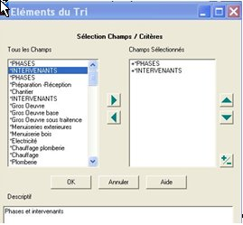
Cliquez sur le bouton
Dans la boite de dialogue " Champ " qui apparaît choisissez pour un premier champ concerné
Pour ajouter un champ sélectionné dans la liste des "Champs utilisés", ou utilisez le bouton
Pour supprimer un champ sélectionné de la liste "Champs sélectionnés", utilisez le bouton
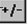
Le champ (niveau) sélectionné apparaît dans la liste
Avec un signe + devant (tri dans l'ordre croissant par défaut), cliquez sur le bouton si vous voulez trier
par ordre décroissant (signe -) par défaut c'est croissant qui est pris en compte.
Refaites la même démarche pour les autres champs (niveaux) souhaités.
Nota : On vient d'effectuer la démarche pour trier les tâches en fonction de leurs champs dans qui suit on voir comment on peut
- de visualiser les tâches d'un projet et regrouper les tâches par champs
"
- de mettre en évidence la hiérarchisation des critères
5.2.3 Regrouper les tâches des champs du traitement " Trier Grouper Tâches"
Dans le volet du bas vont s'afficher les options de ce "Trier Grouper par champs dans l'ordre ou ils ont été créés.
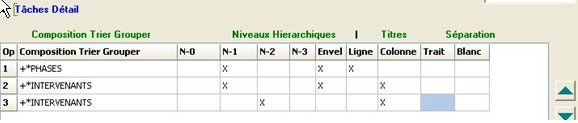
Dans celui-ci vous devrez indiquer :
A droite du volet a quel niveau hiérarchique doit être effectué ce regroupement :
- choisir pour chacun des critères, les regroupements de leurs sous critères hiérarchiques des niveaux N 0 , N-1, N-2, N-3, (3 ième - 4ième - 5 ième - 6ième colonne)
- voir si doit être visualisée également et/ou leur tâches enveloppes (7ieme colonne)
- décochez par ailleurs " Tâches de détails " si vous ne voulez pas faire apparaître les tâches d'exécution (Commande en bleue)
A gauche du volet définir les bandes de ces regroupement de tâches
- par bande avec désignation titre en ligne (8ieme colonne)
- par bande avec désignation titre en colonne à gauche (9ieme colonne)
- par bande avec séparation par ligne sans titre (10ieme colonne)
- par bande avec séparation par espace en blanc (11ieme colonne)
5.2.4 Modifier compléter Affiner un " Trier Grouper Tâches " existant
Vous avez la possibilité de modifier les " Trier Grouper Tâches " mémorisés :
- d' ajouter ou de supprimer une condition (voir chapitre...)
- de modifier les niveaux hiérarchiques des critères des tris (voir chapitre...)
- l'ordre de ceux-ci (voir chapitre...)
- de visualiser leurs tâches enveloppes, les tâches d'exécution (voir chapitre...)
- choisir sous qu'elle forme vont être regroupées les tâches
- en bandes avec titre en ligne (voir chapitre...)
- en bandes avec titre en colonne(voir chapitre...)
- séparées par un trait ou un espace en blanc
PB>5.2.5 Affiner le données des bandes du traitement " Trier -Grouper "
Vous avez quatre possibilités pourrez modifier affiner la visualisation des bandes du " Tris grouper " avec le choix dans les 6ieme, 7ieme, 8ieme, 9ieme colonnes,pour cela cliquer dans la colonne ooncerné "
Description titre en ligne, si vous cliquez dans la 6ieme colonne vous aurez accès à la boite de dialogue "Titre en ligne"
Dans cette boîte de dialogue vous allez pouvoir saisir :
la police couleur et texte du titre
la justification de ce titre à l'intérieur de sa ligne
la taille de la ligne du titre
la couleur de fond de la ligne du titre
la hauteur de cette ligne
la l'épaisseur et la couleur de la ligne horizontale haute
la l'épaisseur et la couleur de la ligne horizontale basse celle-ci est optionnelle.
Description titre de bandes, si vous cliquez dans la 7ieme colonne vous aurez accès à la boite de dialogue "Titre en colonne"
Dans cette boîte de dialogue vous allez pouvoir saisir :
la police couleur et texte du titre
la justification de ce titre à l'intérieur de cette colonne
la largeur de cette colonne
la couleur de fond de cette colonne
la hauteur de cette ligne
l'épaisseur et la couleur de la ligne horizontale séparative niveau
l'épaisseur et la couleur de la ligne verticale gauche
Séparation avec un trait de bandes successivest si vous cliquez dans la 8ieme colonne vous aurez accès à la boite de dialogue "traits", vous pourrez choisir son épaisseur et sa couleur
Séparation avec un espace blanc, si vous cliquez dans la 9ieme colonne vous aurez un espace en blanc pour délimiter les bandes successives
5.2.6 Mémoriser les modifications du traitement " Trier Grouper Tâches "
Lors de la création d'un nouveau " Trier Grouper Tâches " ou si vous désirez mémorisées des modifications
d'un " Trier Grouper Tâches " vous devrez:
- Cliquez sur " Mémoriser un Tri " pour mémoriser le paramétrage dans ce " Trier Grouper Tâches
- Saisir sa désignation et le commentaire correspondant pour ce filtre
Ce nouveau " Trier Grouper Tâches va s'afficher en tête de la liste mémorisée.
5.3 Onglet pour renuméroter les tâches dans l'ordre désiré
Cliquer sur l'onglet renuméroter à l'écran va apparaître toutes les tâches du projet
Si vous cliquer sur la commande"renuméroter toutes les tâches du projet", celles-ci seront numéroter dans l'ordre elle se trouve à l'écran, les vides des tâches supprimés seront comblées.
Au préalable vous pourrez classer les tâches entre-elles
- en ordre croissant ou décroissant sous un seul niveau en utilisant la fonction classer du menu contextuel en cliquant dans la case du titre de la colonne du champ concerné, en particulier pour le cas de classement des tâches par date d "exécution au plus tôt
- en ordre croissant sous plusieurs niveaux en utilisant " Trier grouper " du menu " Outil " pour cela cliquer sur la commande " Trier grouper
5.4 Simulation pour recaler rapidement le planning d'un projet
5.4.1 Remarques
5.4.2 La boite de dialogue simulation
5.4.3 Création d'un simulateur
5.4.4 Utilisation d'un simulateur pour obtenir un projet recalé par simulation
5.4.5 Exemples avec un même fichier deux options de simulations
5.4.1 Remarques
L'intérêt de cette procédure est de pouvoir obtenir rapidement par simulation le planning du déroulement d'un projet qui s'inscrit à l'intérieur des objectifs.
C'est le cas lors
de l'élaboration d'un planning prévisionnel pour affiner rapidement celui-ci en vue de le terminer plus tôt,
du recalage d'un planning actualisé ou l'on a pris du retard et que l'on doit rentrer dans les objectifs initiaux.
Au préalable on va établir un simulateur, c'est à dire découper la durée du projet en plusieurs parties homogènes. et en tenant des contraintes correspondantes à prendre en compte.
En suite aisément et rapidement on pourra obtenir par simulation le planning d'un projet, en comprimant ou en augmentent ces différentes parties. On pourra vérifier plusieurs hypothèses du déroulement du projet, retenir le plus crédible.
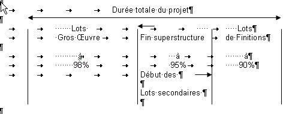
Exemple : Après avoir établi un planning prévisionnel contractuel, il vous sera possible de décomposer votre planning en plusieurs parties (lots gros œuvre, lots technique, lots de finitions) et de comprimer (ou augmenter) la durée de chacune de celles-ci.
Faire une simulation sur l'ensemble du déroulement d'un projet, n'est par réaliste, car les différentes périodes que contient le projet ne sont pas similaire : certaines demandent des moyens matériels importants, d'autres sont des périodes de vacances etc c'est le cas des projets importants ou qui se déroulent sur une longue période.
Dans notre exemple on fera:
une simulation 98% pour la première période, une simulation 95% pour la deuxième période et une simulation de 90% pour la
troisième période.
Ce nouveau planning opérationnel d'exécution, obtenu rapidement, présentera une marge de manœuvre, de sécurité par rapport au planning initial précédent (qui peut être celui du marché).
5.4.2 La boite de dialogue simulation
Celle-ci est à appeler d'un des deux onglets de saisie des données : Prévisionnelles ou Réelles. Elle apparaît à partir de l'option " Simulation projet" du menu " Outils "
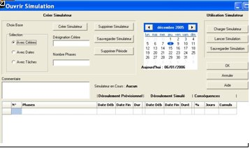
Dans la boîte de dialogue " de simulation "
Commandes situées en haut à gauche
- vous pourrez créez un simulateur d'un projet
- le sauvegarder sous un nom (par défaut c'est le non du fichier avec .sim.
voire créer plusieurs simulateurs d'un même projet ajouter un indice vous pourrez ajouter un commentaire.
Commandes situées en haut à droite
-.chargez un simulateur mémorisé pour effectuer une simulation d'un projet
- lancer sa simulation.
Cette simulation pourra être sauvegardée sous un autre nom de fichier ou en écrasant les données du projet initial.
Dans les lignes du bas de cette boite apparaîtra : le cadre des données du cadre simulateur avec les données de la simulation correspondante à votre choix.
5.4.3 Création d'un simulateur
Vous aurez le choix de créer un simulateur à partir des trois options :
- d'un critère ou d'un sous critère de niveau inférieur.
- des périodes successives qui vont découpées le déroulement de ce projet.
- des tâches significatives du projet
Choix avec critère ou d'un sous critère
Si vous cliquez sur la commande " Avec critères " vous devrez identifier ce critère ou sous critère
Dés que vous aurez cliqué sur la commande " Créer un simulateur " dans le cadre du simulateuren bas de la boite va apparaître autant de lignes que de sous critères concernés par notre choix.
dans la 2ème colonne Désignation on va avoir le nom de ces sous critères
dans la 3ème colonne on aura la date du début de l'enveloppe de ce sous critère
dans la 4ème colonne on aura la date de fin de l'enveloppe de ce sous critère
dans la 5ème colonne on aura la durée en jours entre ces deux dates
les 3ème - 4ème - 5ème colonnes contiennent les bases du simulateur c'est le déroulement initial.
dans les 6ème - 7ème - 8ème colonnes vont apparaître, au départ, les mêmes valeurs, c'est le déroulement simulé
mais ces valeurs vont évoluées en fonction de la saisie des données de l'actualisation que l'on va effectuées
On connaîtra les conséquences lors de la simulation, au niveau du déroulement simulé du projet.
dans la 9ème colonne on connaîtra en % le décalage en plus intervenu par la simulation de cette ligne
dans la 10ème colonne on connaîtra en jour le décalage en plus intervenu par la simulation de cette ligne
dans la 11ème colonne on connaîtra le décalage cumulé en jour en plus intervenu par la simulation des différentes lignes
.
Choix avec la désignation des tâches significatives du projet
Si vous cliquez sur la commande " Avec dates" vous devrez saisir le n° des tâches significatives du projet concernées
Dés que vous aurez cliqué sur la commande " Créer un simulateur " dans le cadre du simulateur de la boite va apparaître autant de lignes que de tâches concernés par notre choix.
.
Dans la 1ère colonne le numéro des tâches concernée dans la 2ème, 3ème - 4ème - 5ème colonnes les données du déroulement initial du projet
De même, dans les 6ème - 7ème - 8ème colonnes vont apparaître, également les mêmes valeurs, et on en connaîtra les conséquences lors de la simulation dans les 9ème - 10ème et 11ème colonnes
Choix des périodes successives qui vont découpées le déroulement du projet.
Si vous cliquez sur la commande " Avec dates"vous devrez saisir les dates de début des périodes du projet concernées
Dés que vous aurez cliqué sur la commande " Créer un simulateur " dans le cadre du simulateur de la boite va apparaître autant de lignes que de nombre de périodes concernées par notre choix.
Dans la 2ème, 3ème - 4ème - 5ème colonnes les données du déroulement initial du projet
De même, dans les 6ème - 7ème - 8ème colonnes vont apparaître, également les mêmes valeurs, et on en connaîtra les conséquences lors de la simulation dans les 9ème - 10ème et 11ème colonnes
Lorsque le simulateur sera figé vous pourrez le sauvegarder en ajoutant un court commentaire
5.4.4 Utilisation d'un simulateur pour obtenir un projet recalé par simulation
Cliquez sur la commande " Charger simulateur " et choisissez un simulateur mémorisédans la boite de dialogue.
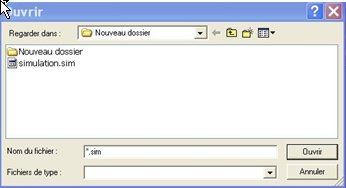
Dans le simulateur qui va apparaître, pour saisir les données de simulation, pour chacune des périodes (lignes du simulateur) vous aurez trois options :
choix d'une nouvelle fin pour la période
choix d'une durée pour la période
choix d'un nouveau % d'exécution pour la période
Par ailleurs si nécessaire vous pourrez supprimer un simulateur mémorisé
On va saisir successivement une de ces trois options dans chacune des périodes en commençant par la première
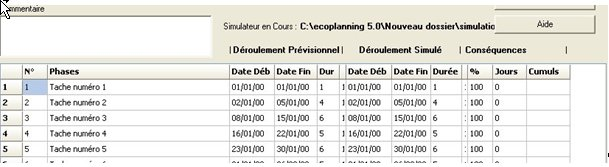 |
Les données du déroulement simulé vont s'inscrire dans les 6ème - 7ème - 8ème colonnes
Dans les 9ème - 10ème colonnes vont apparaître les conséquences de la simulation (de diminution ou d'augmentation) pour chaque période et dans la 11ème le cumul des conséquences.
L'utilisateur, vue la rapidité avec un même simulateur, pourra effectuer une ou plusieurs simulations en vue de conserver la plus adaptée. Toutes les durées des tâches et décalages entre-elles seront modifiées en correspondance avec la ou les simulations de la ou des périodes dans lesquelles elles sont contenues.
Cette ou ces simulations devront être sauvegardées, dans une boite de dialogue qui va apparaître, l'utilisateur pourra sauvegarder cette simulation sous un autre nom de fichier ou en écrasant les données du projet initial et les remplaçant par celles -ci
5.4.5 Exemples avec un même fichier deux options de simulations
On va utiliser le fichier simulation de 17 tâches du fichier Simul .eco avec une date début le 02/01/06
qui comprend 9 tâches sur le chemin critique (voir tableau ci-dessous), et d'autres tâches de durées 5 et 10 jours liées aux tâches des phases et qui se trouvent pas sur le chemin critique
| 1ie période avec tâches 1-2-3 |
de durées 1-4-5 jours |
phase de 10 jours |
PH 01 |
| 2ie période avec tâches 4- 5 |
de durées 5-5 jours |
phase de 10 jours |
PH 02 |
| 3ie période avec tâches 6-7 |
de durées 5-5 jours |
phase de 10 jours |
PH 03 |
| 4ie période avec tâches 8-9 |
de durées 7-.7 jours |
phase de 14 jours |
PH 04 |
Si on choisi de créer un simulateur de quatre périodes (voir le simulateur Simul.sim)
On va utiliser l'option réalisation du simulateur avec dates délimitant les périodes soit
dates des périodes: le 13/01/06 - le 27/01/06 - le 10/02/06 - le 02/03/06
|
date de fin la première période le 13/01/06 |
pour la période du 02/01/06 au 13/01/06- |
| date de fin la deuxième période le 27/01/06 |
pour la période du 16/01/06 au 27/01/06 |
| date de fin la troisième période le 10/02/06 |
pour la période du 30/01/06 au 10/02/06- |
| date de fin la quatrième période le 02/03/06 |
pour la période du 13/02/06 au 02/03/06 |
Dans une première simulation on contracte la 2ième et 4ième période de 80%
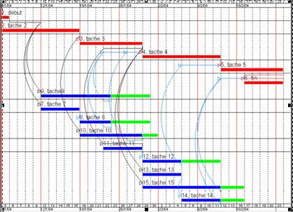
Dans une deuxième simulation on contracte la 1ière et 3ième période de 80%
6.5 Onglet de saisi et échéancier des coûts
Cliquer sur l'onglet de saisi et échéancier des coûts à l'écran
En haut nous avons le volet de saisi des coûts
En bas nous avons le volet des échéanciers des coûts
Saisi des coûts
Vous allez pouvoir saisir directement dans le volet du haut, les colonnes correspondantes des tâches concernées. les dépenses (-) et ou les coûts (+) recettes
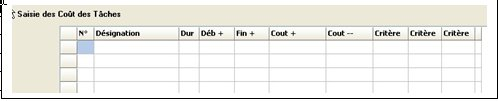
Les coûts dépenses sont réparties uniformément sur la durée des tâches. les coûts recettes sont appliqués sur tâches ponctuelles en principe d'un jour.
Au préalable, vous pourrez filtrer les tâches du projet, pour ne conserver que les tâches d'un même critère (par exemple d'un lot)
Si le total obtenu et différent de celui à obtenir vous pourrez modifier la valeur de certaines tâches pour rentrer dans le coût total prévu.
Au niveau des rapports vous pourrez visualiser et obtenir différentes présentations les coûts des tâches reparties par critères sur plusieurs niveaux.
Echéancier des Coûts
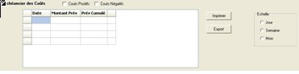
Vous aurez le choix dans la boîte de dialogue ci-contre d'obtenir le
- choix d'avoir l'échéancier coûts recettes ou coûts dépenses
- choix de l'échelle de cet échéancier :jours, semaines, mois
Vous aurez dans les colonnes de l'échéancier à droite :
- le montant par unité (jour -semaine- mois) et ce total prévisionnel cumulé
- le montant par unité (jour -semaine- mois) le Total réel cumulé
- le montant par unité de la dérive (jour semaine -mois) le total de la dérive cumulée
Remarque La date de début et de fin de l'échéancier sera fonction du choix de la sélection de filtrage que l'on aura effectuée exemple
- échéanciers des seules tâches d'un lot pour la période d'exécution de celles-ci
- échéanciers de toutes les tâches du projet pendant la totalité de la durée du projet
Vous aurez le choix pour l'échéancier
- de son impression,
- de son transfert sur Excel
5.6 Import / Exportt à revoir complètement .
L